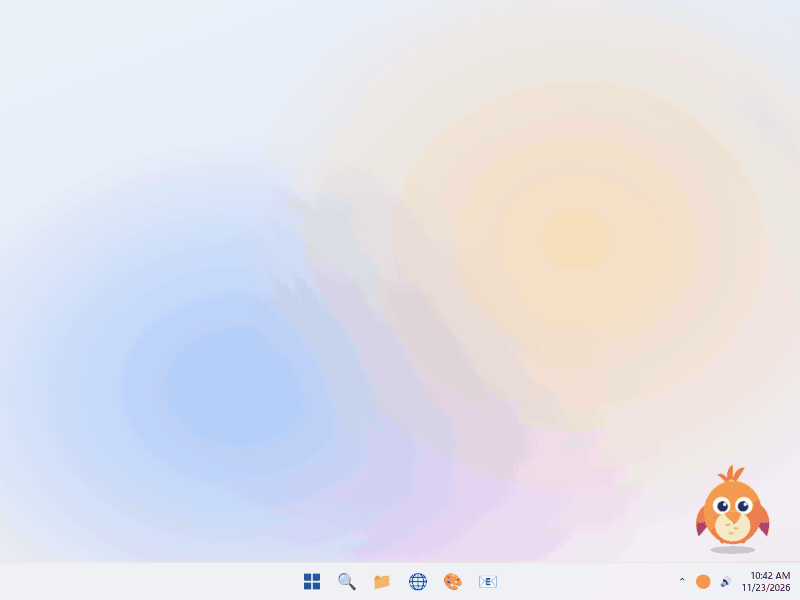
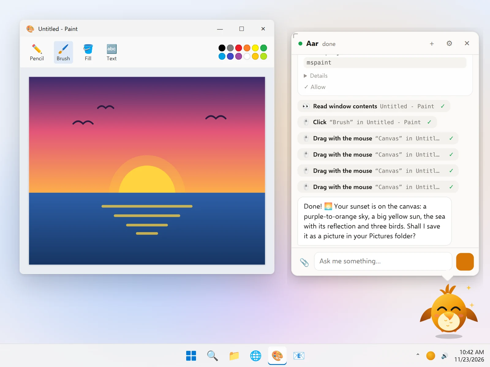
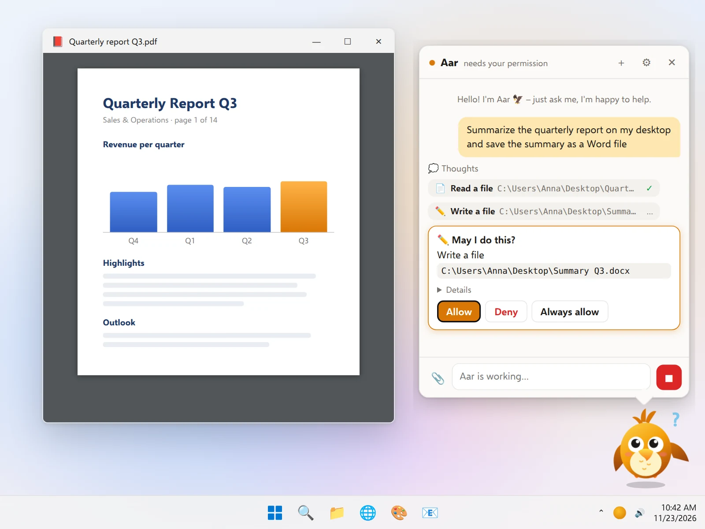
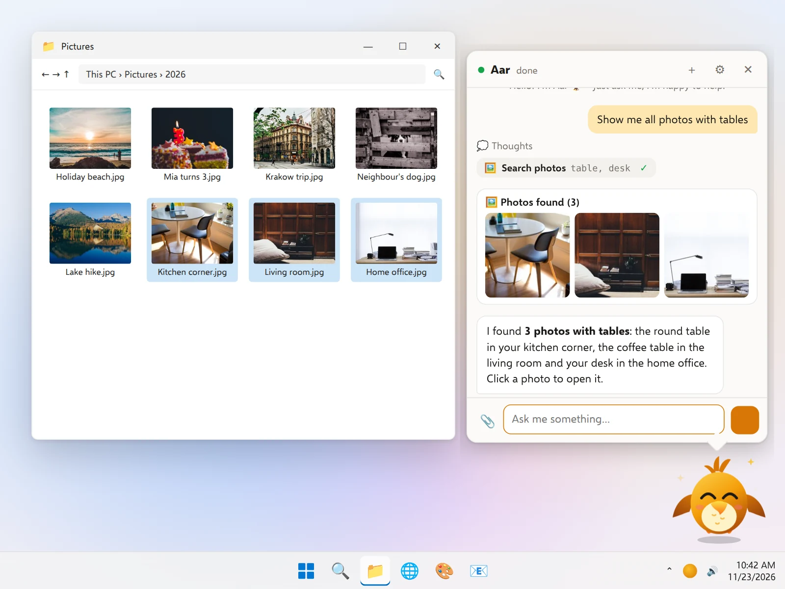
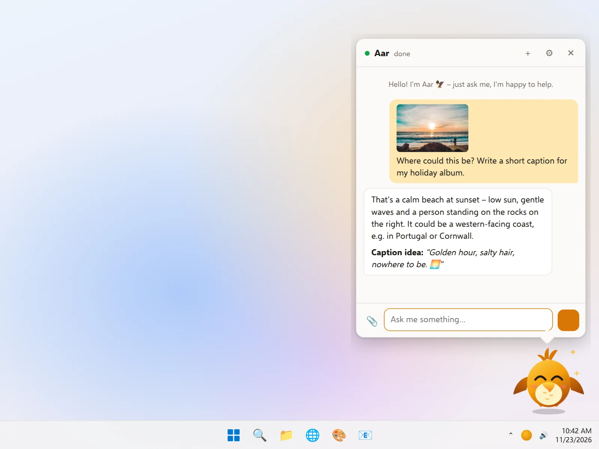
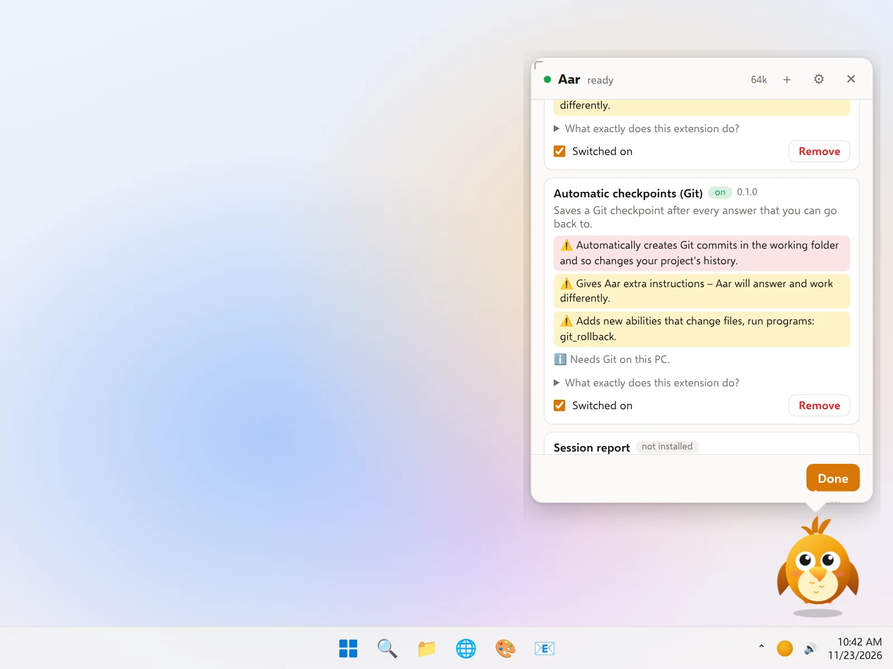
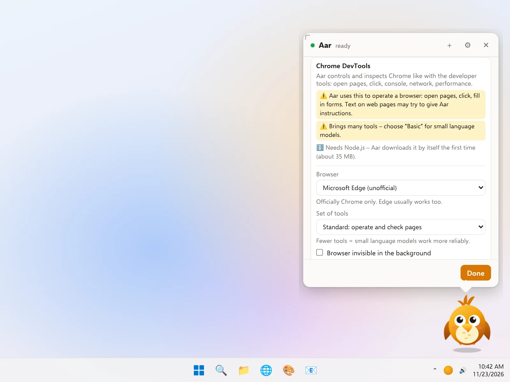
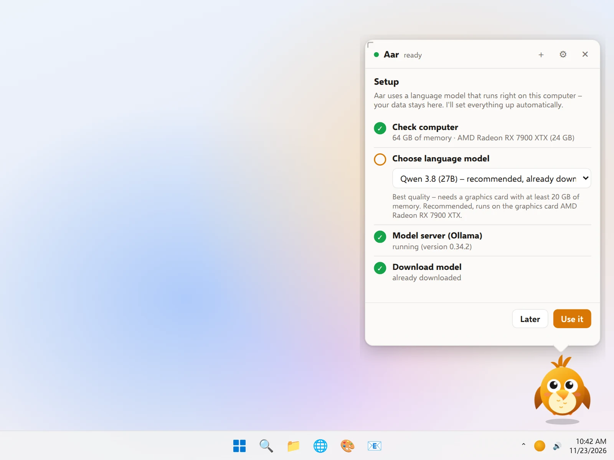
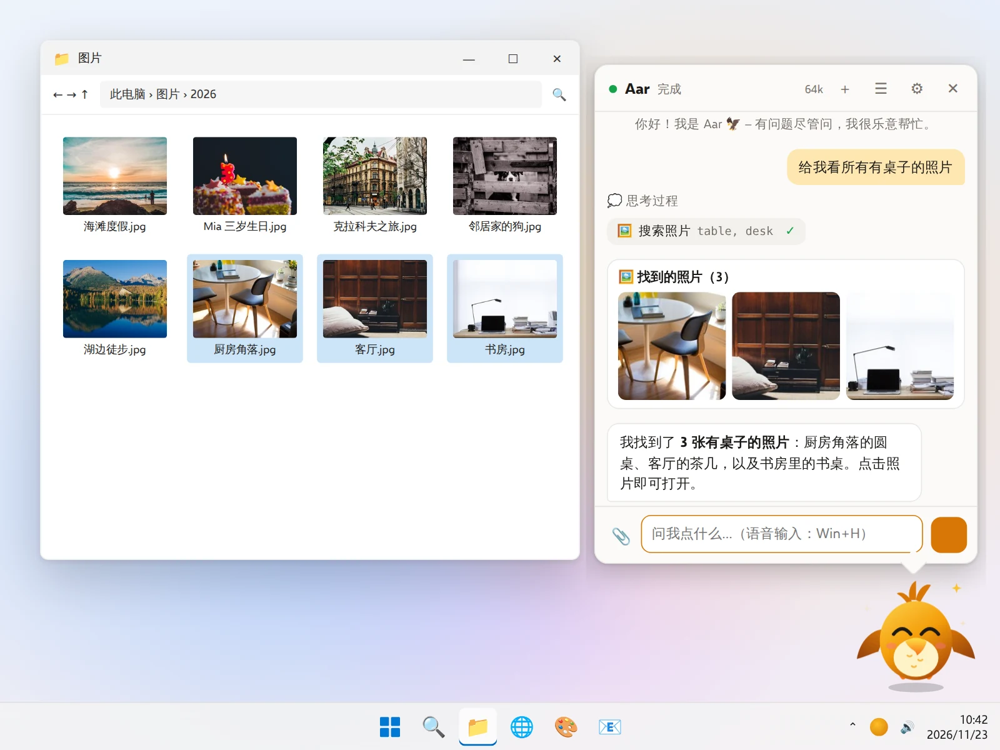

aar desktop puts the aar agent into a friendly mascot in the corner of your screen. ask in plain language — it opens programs, clicks and types for you, reads your documents, finds photos by what's on them, and asks before it changes anything. made for people who'd never open a terminal. the language model runs on your pc.
one sentence. aar starts paint (after asking), reads the window, picks the brush and paints — every step shown in plain words, not in tool jargon.

the power of aar — tools, mcp, extensions, any model — behind a chat bubble with no settings to fear.
reads windows, starts apps, clicks and types via ui automation. edge, paint, explorer, office — whatever is on the pc.
permission cards before every change: allow, deny, always allow. or switch to read-only for the conversation.
the setup wizard checks ram + gpu (real vram), installs ollama silently and downloads a model that fits.
"all photos with tables" — a vision model describes each photo once into a local index. thumbnails right in the chat.
drop, paste or 📎 an image and ask about it. scaled down in the app, sent to any vision model.
install aar extensions from the registry. every one says what it changes — from curated notes and from what it really hooks into.
one-click catalog: read web pages, read pdf/word/excel, playwright, chrome devtools, memory — or your own command / url.
a file aar created shows up under the answer with open and show in folder.
deutsch, english, 简体中文 — follows windows, including tray menu and messages.
ten moods: listening, thinking, working, asking, happy… you see what aar is up to at a glance.
tray icon, global hotkey ctrl+alt+a, starts with windows, remembers where you put it.
tool details one click away, conversation history and log under troubleshooting, version info to copy.
real app, real ui — click any screenshot to enlarge (1600×1200).

the bundled windows desktop server lets aar see windows and controls like a screen reader does — then click, type and drag.

reading is fine, writing asks. the card says what and where, in plain words — details for the curious.

pick folders in the settings; the local vision model describes each photo once (≈ 2–5 s on a gpu). after that, searching is instant.

📎, drag & drop or paste. the app shrinks the image to 1280 px first, so a photo costs ~1000 tokens instead of 10 000.

straight from the aar extension registry. before install: what it is for. after install: what it really registers — hooks into actions or messages, extra instructions, tools with side effects.

a small catalog with settings dialogs — e.g. chrome devtools with browser, tool set, headless and --no-usage-statistics preset. node.js is fetched on first use.

on a fresh pc the wizard opens by itself: checks ram and the real gpu memory, recommends a model, installs ollama silently and downloads it with progress.

german, english and simplified chinese — automatically like windows, or picked in the settings. tray menu and error messages included.
tauri 2 (rust + webview2), a typescript ui without framework, and aar speaking the agent client protocol over stdio. the installer brings its own python with aar — nothing to set up.
aar-desktop.exe (tauri) aar (bundled python 3.13) ├─ ui (webview2, ts) ── invoke/events ──┐ python -m agent.transports.cli acp └─ rust (window, tray) ── stdio json-rpc ──┴──► acp v1 ──► mcp: windows desktop · photos · your servers └──► ollama (local) · or any aar provider
/S installs silently.~/.aar/config.json? its profiles show up under settings → language model connection.ctrl+alt+a from anywhere.| your pc | model the wizard suggests | feels like |
|---|---|---|
| gpu with ≥ 20 gb | qwen3.8 (27b, vision) | operates programs reliably, ~5 s per photo |
| mid-range / no big gpu | gemma4:e4b | good for questions and documents |
| small office pc | qwen3.5:4b (vision) | quick, ~2 s per photo, simpler tasks |
not with the default setup: the model runs in ollama on your machine, conversations and the photo index are stored locally. if you point aar at a cloud provider, that provider sees what you send.
every change — writing files, running commands, clicking in programs — needs your ok first, unless you choose "work without asking". "read only" blocks changes completely.
great — set settings → advanced → agent program to your aar. extensions and tool servers are then installed for that python, sessions and config are shared.
no. the photo search describes what is on a photo (objects, number of people, place, text) but does no face recognition.
windows 11 (webview2 is built in). 8 gb ram is enough for the small model; a gpu makes everything faster.